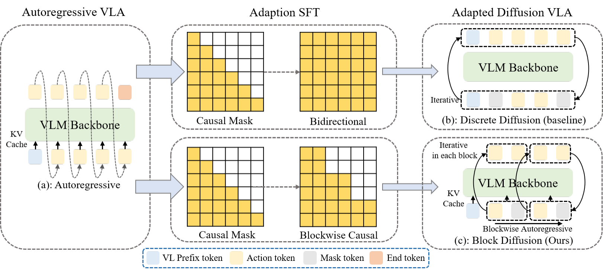
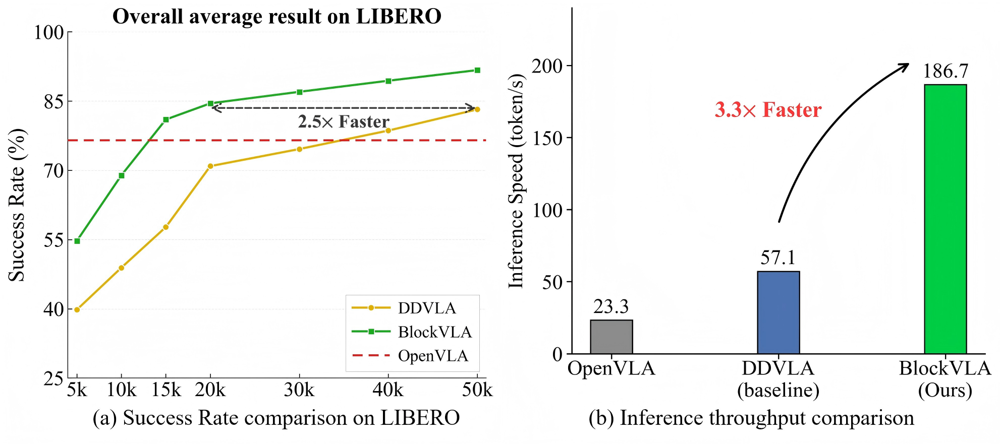

Discrete Diffusion (Baseline)
- Parallel Decoding
- KV-Cache Reuse
- Efficient Seq Scaling
While autoregressive (AR) Vision-Language-Action (VLA) models have demonstrated formidable reasoning capabilities in robotic tasks, their sequential decoding process often incurs high inference latency and may amplify error accumulation during long-horizon execution. Discrete Diffusion Language Models (dLLMs) provide a promising alternative through parallel token refinement, but their practical deployment in robotics remains limited by repeated denoising function evaluations (NFEs) and the difficulty of directly applying standard KV caching to bidirectional iterative decoding. To bridge these paradigms, we propose BlockVLA, a framework that adapts pretrained AR backbones into an efficient discrete diffusion policy through a block diffusion paradigm. BlockVLA maintains autoregressive dependencies at the block level while enabling parallel denoising within each block, thereby combining global causal coherence with local parallel generation. This design enables prefix KV-cache reuse across completed blocks, reduces the effective cost of iterative denoising, and provides a smoother transition from AR pretraining to diffusion-based policy fine-tuning. We conduct extensive evaluations on the LIBERO and SimplerEnv benchmarks. Experimental results demonstrate that our BlockVLA achieves a 3.3× inference acceleration over standard discrete diffusion baselines. Furthermore, our model exhibits superior training efficiency, with success rates converging substantially faster than baselines, a gain that is particularly pronounced in complex, long-horizon tasks, where BlockVLA achieves significant performance gains in the early stages of training. This work establishes Block Diffusion as a robust bridge between large-scale pretrained AR models and efficient, high-frequency real-time robotic control.

Our BlockVLA accelerates both training convergence and inference: it reaches above 85% overall success rate 2.5× earlier during training and achieves 3.3× faster inference.

We evaluate on real-world robot arm for three horizons:
Each task contains 100 collected trajectories and is evaluated over 24 trials. The paired videos are synchronized at 3× playback speed. When one policy finishes early, it stays on the final frame until the paired run also completes.
BlockVLA also achieves faster training convergence and inference speed in real-world experiments. The convergence acceleration becomes more pronounced as the task horizon increases.
@article{wang2026blockvla,
title={BlockVLA: Accelerating Autoregressive VLA via Block Diffusion Finetuning},
author={Wang, Ruiheng and Bai, Shuanghao and Zhang, Haoran and Chen, Badong and Xu, Xiangyu},
journal={arXiv preprint arXiv:2605.13382},
year={2026}
}